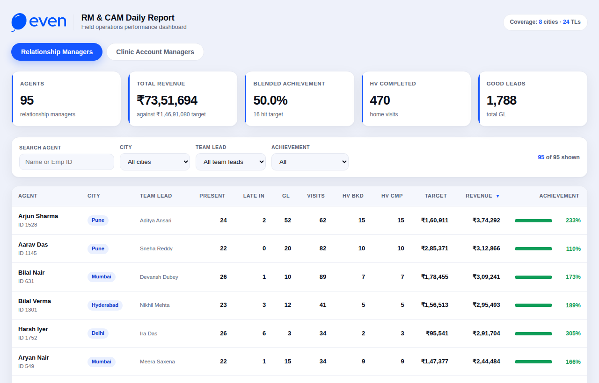
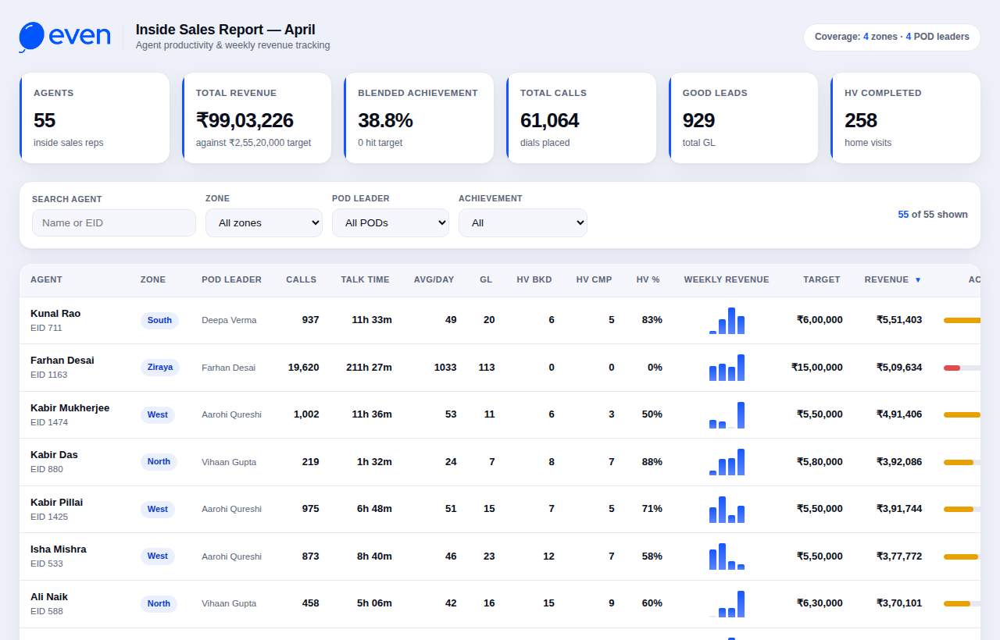
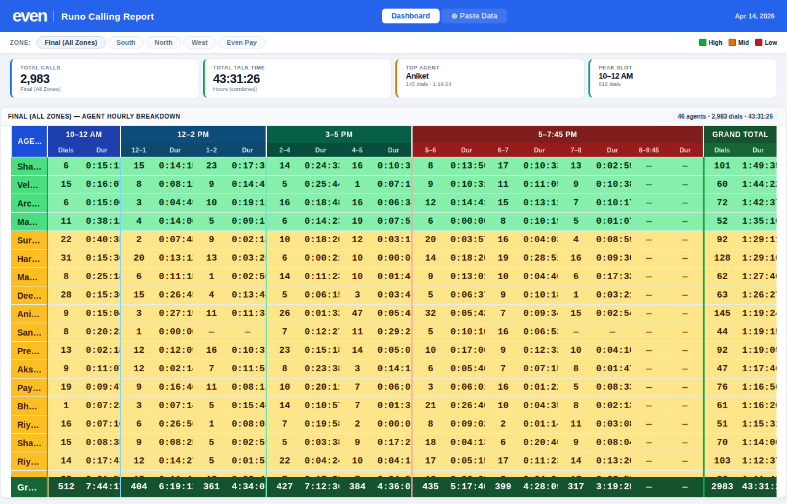
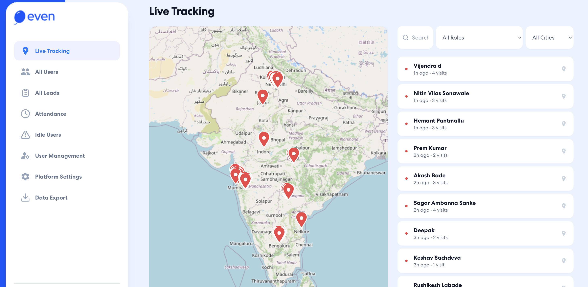
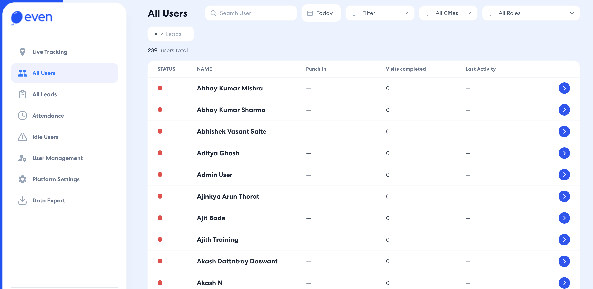
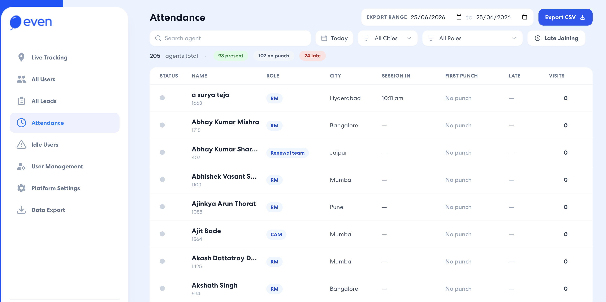

Sales Operations specialist at Even Healthcare and part of the founding SalesOps pilot — built the function from zero. From hourly calling metrics to live forecasting, field-rep tracking, and AI-built operational tooling, I work where sales, data, and process meet.
When I joined Even Healthcare, there was no SalesOps function — we were the pilot batch and we started everything from the ground up. No reports, no dashboards, no visibility into what the floor or the field was actually doing.
I built the input-metric layer first: hourly calling reports, Good Lead marks, and Home Visits booked every half hour. Then the predictive layer on top — HV forecasts three days out, an expected-closure funnel for the next day, and daily activity funnels showing call connection rates and which leads were genuinely worked.
The thesis was simple: if you can see the inputs cleanly, you can forecast the revenue. Everything that followed — field tracking, dashboards, the auto-dialer, the live HV report — was built to make that loop tighter.
Hourly calling, GL marks, HV bookings captured at 30–60 min cadence.
3-day HV forecast and next-day closure funnel built off live marks.
RM tracking initiated — random check-ins plus a live location/attendance app.
Even Pay clinic network (flat ₹250 cx discount) to grow lead generation and flow.
Each report below was designed to change what the floor or field did the next hour — and to make tomorrow's revenue legible today.
Same-day Home Visit outcomes were a black box — no one could see what happened to HVs scheduled for today. I scoped the CRM changes with the CRM team and built a live report giving real-time updates on every HV scheduled for the day. This became the backbone of the 35%→67% completion lift.
A 3-day forward Home Visit forecast built from live HV and Good Lead marks, plus an expected-closure funnel projecting tomorrow's conversions. Gave leadership a reliable forward view of revenue instead of a rear-view mirror.
Hourly calling reports paired with a daily activity funnel — call connection rate of the day and which leads agents actually worked on. Surfaced effort vs. output gaps across a large inside-sales floor in near real time.
A full Looker Studio dashboard suite: weekly/monthly Inside Sales review, an RM dashboard for daily leads generated, and a clinic dashboard attributing lead volume to each clinic. One source of truth for performance reviews across the org.
Introduced structured Home Visit feedback to raise HV quality, closing the loop between what was scheduled, what completed, and what the customer experienced — feeding directly back into completion and conversion.
Built the reporting that drives compensation for the whole field channel. RM Travel Allowance is reimbursed on verified clinic visits and movement from my tracking report rather than self-reported claims, and full-channel payroll is computed against performance metrics — visits, leads and attendance — sourced directly from the reports I built.
Three of the reporting tools I built at Even, running live in your browser with anonymized sample data. No mockups — open any of them and filter, sort, and explore exactly as the teams did.

Field-ops dashboard across 8 cities and 24 team leads. KPI cards, per-agent revenue vs target, HV completion, late-punch tracking, with city/TL/achievement filters and sortable columns.

Agent productivity and weekly revenue tracking across zones and POD leaders. Dials, talk time, Good Leads, HV completion %, and a four-week revenue sparkline per rep.

Hourly calling breakdown by agent and time slot, with a paste-raw-data parser that auto-detects slots, ranks the top agent, and surfaces the peak calling window of the day.
Beyond reporting, I built the systems the team runs on — including a live field-tracking web app built with AI assistance, automated reporting, and the dialer that lifted churning.
Designed and built a web app (with Claude) to track field reps live — current location, attendance, and full visibility into which clinics each RM visited. The same data feeds RM Travel Allowance, reimbursed on verified visits instead of self-reported claims.
Brought in Ameyo to scale outbound calling and improve churning — a structural lever that raised the volume and consistency of contact across the inside-sales floor.
Automated recurring reports with Google Apps Script and built leaderboards, tracking systems, and dashboards — removing manual report assembly so the team spends time on decisions, not data wrangling.



When we started, only 35% of Home Visits completed and same-day HV outcomes were invisible. By rebuilding HV tracking with the CRM team, shipping a live status report, and running an HV feedback loop, we reached 67% completion within four months.
With the full SalesOps stack in place — input metrics, forecasting, field tracking, the Even Pay lead engine and the dialer — monthly revenue moved from ₹1.5 cr to ₹3 cr.
Built the SalesOps function from scratch: input metrics, HV forecasting, closure funnels, Looker dashboards, RM field tracking, the Even Pay lead network, automated reporting, plus RM Travel Allowance and full-channel payroll driven by my reports. Drove HV completion 35%→67% and supported revenue doubling from ₹1.5cr to ₹3cr monthly.
Dual role across customer engagement and operational efficiency — managed and tracked leads while building detailed Excel and Tableau reports that drove strategic decisions and optimized performance across the org.
Delivered customer service and support over chat, resolving inquiries with strong written communication. Grounded my later operations work in a real understanding of on-the-floor sales and support.
If you need someone who builds the reporting, the forecasting and the tooling that move revenue — not just maintains them — let's connect.